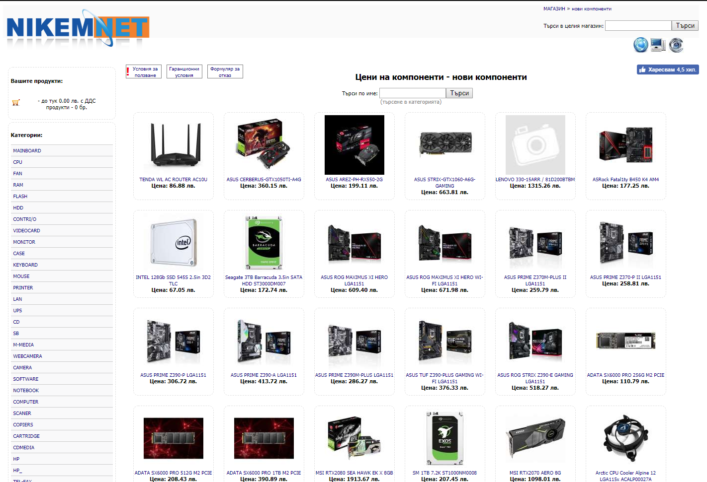

{{site.title}}
{{site.description}}
The idea for this simple design store originate from one of my favorite place to buy computer components. If you are into those kinds of stuff and you are from Bulgaria you probably are familiar with it. It's called Nikem Net and it looks like this. 
It is a great place for us pc entusiasts to buy cheaper hardware for our machines.
Soo... back then with my friend when we used to buy stuff from there I used to tell him that this site looks like it was made for homework for some IT student, because it looks so amateur and simple (but it works).
And here we go a year or two later and the wheel of karma has turned around and this is exactly what I am about to do. I wish it was something else more unique, but after three other successfully completed projects like this one there is not much left in my head.
In the current stage of the development is nothing more than proof of concept, as it has some bugs and the future is unclear.